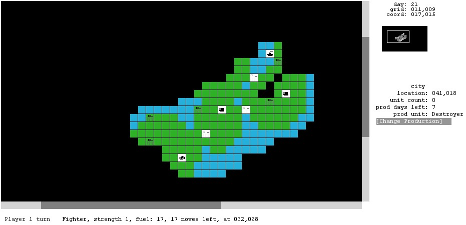
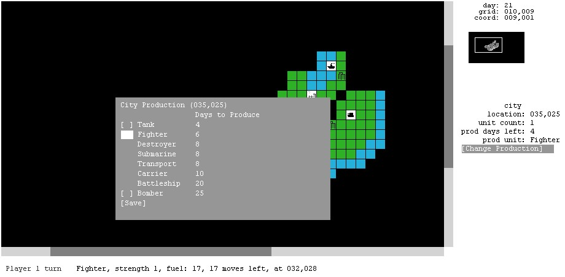
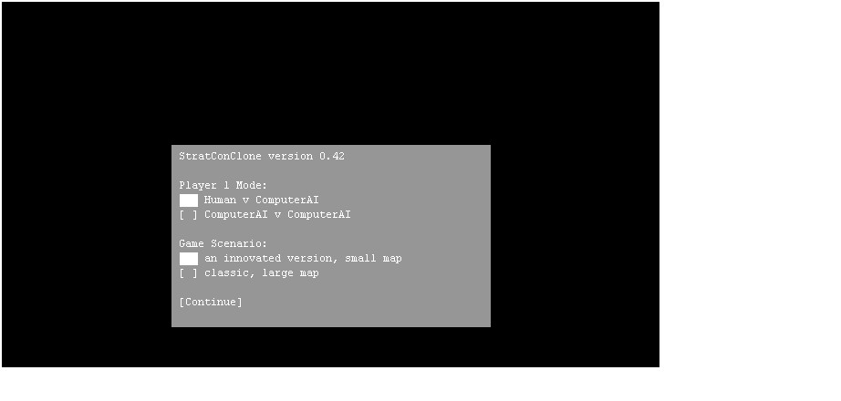

Just for fun... based on the classic/retro game called Strategic Conquest that is available for the Apple Macintosh.



use a web browser that supports HTML5 canvas.
GPL version 3
You can download this project in either
zip or
tar formats.
You can also clone the project with Git by running:
$ git clone git://github.com/mmcnicol/StratConClone